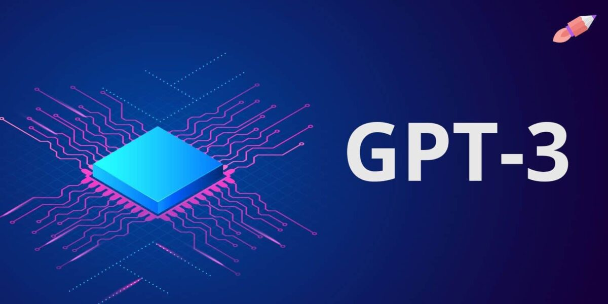
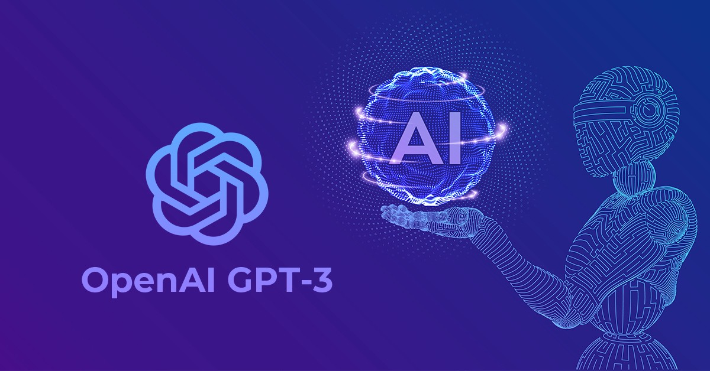

Codex de OpenAI promete traducir lenguaje natural en código de programación gracias a la inteligencia artificial
La compañía de inteligencia artificial OpenAI ha conseguido varios logros importantes en los últimos años. Uno de los más impresionantes probablemente sea GPT-3 y lo que es capaz de hacer para improvisar según lo que le digamos. Ahora la compañía promete una herramienta aún más útil con Codex, una herramienta que traduce del inglés a lenguaje de programación.
El software se llama Codex y está diseñado para facilitar la vida a los programadores profesionales sin que tengan que picar código básico. Por otro lado, también puede ayudar a los que comienzan a programar o los que no saben prácticamente nada de programación, permitiéndoles dar los primeros pasos con “un guía“ de ayuda.
Codex OpenAI

OpenAI Codex es un descendiente de GPT-3; sus datos de entrenamiento contienen lenguaje natural y miles de millones de líneas de código fuente de fuentes disponibles públicamente, incluido el código en repositorios públicos de GitHub. OpenAI Codex es más capaz en Python, pero también domina más de una docena de lenguajes, incluidos JavaScript, Go, Perl, PHP, Ruby, Swift y TypeScript, e incluso Shell. Tiene una memoria de 14 KB para código Python, en comparación con GPT-3, que tiene solo 4 KB, por lo que puede tener en cuenta más del triple de información contextual al realizar cualquier tarea.
La habilidad principal de GPT-3 es generar lenguaje natural en respuesta a un mensaje de lenguaje natural, lo que significa que la única forma en que afecta al mundo es a través de la mente del lector. OpenAI Codex tiene gran parte de la comprensión del lenguaje natural de GPT-3, pero produce un código de trabajo, lo que significa que puede emitir comandos en inglés a cualquier pieza de software con una API. OpenAI Codex permite que las computadoras comprendan mejor la intención de las personas, lo que puede capacitar a todos para hacer más con las computadoras.
Una vez que un programador sabe qué construir, el acto de escribir código se puede considerar como (1) dividir un problema en problemas más simples y (2) asignar esos problemas simples al código existente (bibliotecas, API o funciones) que ya existir. La última actividad es probablemente la parte menos divertida de la programación (y la mayor barrera de entrada), y es donde OpenAI Codex sobresale más.

OpenAI Codex es un modelo de programación de propósito general, lo que significa que se puede aplicar esencialmente a cualquier tarea de programación (aunque los resultados pueden variar). Lo hemos utilizado con éxito para la transpilación, la explicación del código y el código de refactorización. Pero sabemos que solo hemos arañado la superficie de lo que se puede hacer.
Ahora estamos haciendo que OpenAI Codex esté disponible en versión beta privada a través de nuestra API, y nuestro objetivo es escalar lo más rápido que podamos de manera segura. Durante el período inicial, OpenAI Codex se ofrecerá de forma gratuita. OpenAI continuará construyendo sobre la base de seguridad que establecimos con GPT-3, revisando aplicaciones y ampliándolas gradualmente mientras trabaja en estrecha colaboración con los desarrolladores para comprender el efecto de nuestras tecnologías en el mundo.